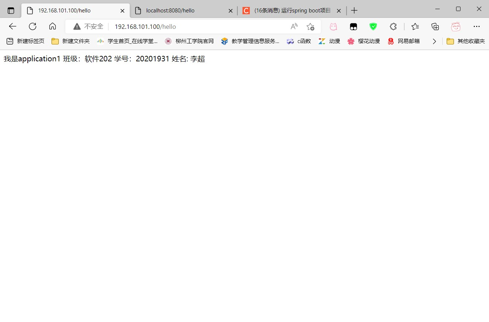
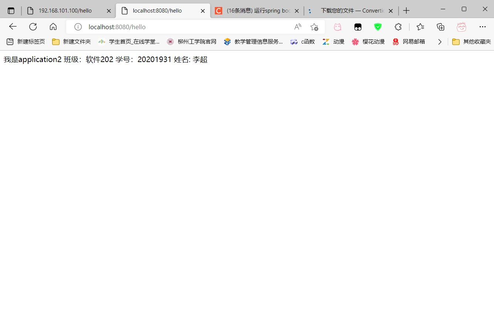
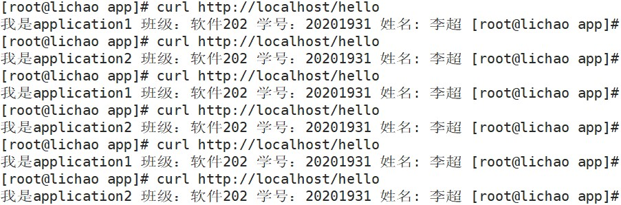

1.安装nginx
在实验一的基础上，在/opt目录下创建src目录，并进入该目录，用于存放安装包
cd /opt
mkdir src
cd src
在src目录下安装nginx安装包
wget https://nginx.org/download/nginx-1.22.1.tar.gz
用ls指令查看nginx.gz压缩包，并用tar命令解压，解压完成后进入nginx文件
tar -zxvf nginx-1.22.1.tar.gz
cd nginx-1.22.1
ls指令查看该文件内容

执行configure文件，之后再执行make install
./configure --prefix=/opt/nginx
make install
在此过程中如果缺少相关文件报错，执行以下代码，再重复上一步操作
yum install -y zlib-devel.x86_64 pcre2-devel.x86_64 #centOS
apt install -y zlib1g-dev libpcre2-dev #ubantu
进入/opt/nginx，查看该目录下内容

进入conf查看配置文件nginx.conf,默认80端口打开
server {
listen 80;
server_name localhost;
location / {
root html;
index index.html index.htm;
}
error_page 500 502 503 504 /50x.html;
location = /50x.html {
root html;
}
}
输入以下代码，将防火墙打开
firewall-cmd --zone=public --add-port=80/tcp --permanent
systemctl restart firewalld.service
在网页中输入ip地址，通过80端口访问，如：192.168.101.100:80

进入nginx目录下的html目录，编辑其中默认index界面
cd /opt/nginx/html
vim index.html

添加以下内容，并保存
<p>我是软件202班李超同学</p>

再次在网页中输入ip地址，通过80端口访问，如：192.168.101.100:80，发现中文部分乱码

重新编辑index.html文件在
中加入网页的编码类型，如utf-8<meta charset="UTF-8">

重新访问地址，发现内容正常输出

2.配置jdk
在/opt/src中下载jdk包
wget https://download.java.net/java/GA/jdk19.0.1/afdd2e245b014143b62ccb916125e3ce/10/GPL/openjdk-19.0.1_linux-x64_bin.tar.gz
解压到/usr/local/目录下，并编辑/etc/profile，添加以下内容到末尾，结束后使用source点命令，重新执行刚修改的初始化文件，使之立即生效，再输入java -version查看jdk版本来确定是否配置成功
tar -C /usr/local/ -zxvf openjdk-19.0.1_linux-x64_bin.tar.gz
vim /etc/profile
export JAVA_HOME=/usr/local/jdk-19.0.1
export PATH=$JAVA_HOME/bin:$PATH
export CLASSPATH=$JAVA_HOME/lib/dt.jar:$JAVA_HOME/lib/tools.jar
source /etc/profile
java -version

3.创建springboot工程
使用idea创建一个Springboot项目

选择Spring Web

创建controllerbao包，并创建TextControllerlei类，编写以下方法

用浏览器访问localhost:8080/hello

打包

找到项目jar包

重复上述方法，再创建一个Springboot项目，将TextControllerlei类中hello方法返回值改成以下内容，并打包

在/opt目录下创建app目录，并将jar包通过Xftp放入其中
cd /opt
mkdir app
cd app

输入以下代码将java项目在后台执行，并重定向输入到Log_demo8080.log文件中
#负载均衡时通过8080和8081同时启动，运用权重来分配访问的频率
nohup java -jar lichao-0.0.1-SNAPSHOT.jar > Log_demo8080.log 2>&1 &
nohup java -jar lichao1-0.0.1-SNAPSHOT.jar --server.port=8081 > Log_demo8081.log 2>&1 &
ps aux | grep java
curl http://localhost:8080/hello
curl http://localhost:8081/hello


4.配置负载均衡
回到/opt/nginx/conf/目录下，vim编辑nginx.conf文件
cd /opt/nginx/conf/
vim nginx.conf
在nginx.conf中添加一个上游服务器，在这里配置负载均衡
upstream lichao
{
server 127.0.0.1:8080 weight=1;
server 127.0.0.1:8081 weight=1;
}
在nginx.conf中location将内容注释掉，并反向代理到负载均衡
location / {
#root html;
#index index.html index.htm;
proxy_pass http://lichao;
}
修改后重新加载一下配置文件
../sbin/nginx -t
../sbin/nginx -s reload
#如果报错：nginx: [error] invalid PID number "" in "/opt/nginx/logs/nginx.pid"
#执行以下指令
/opt/nginx/sbin/nginx -c /opt/nginx/conf/nginx.conf
再次访问ip地址

加入/hello后缀

尝试不断刷新网页，可以发现内容中application1和application2在不断切换，确定能正确交替返回上述两个tomcat的内容

通过curl命令访问http://localhost/hello，确认能正确交替返回上述两个tomcat的内容。
